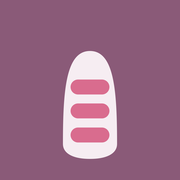

Every client. Every nail. Remembered.
A client-record app for nail technicians. Service history, photos, and cautions — fully offline.
Download on the App StoreService timeline
Record the menu, price, products used (with codes), conversation notes, and photos for every visit — see last time at a glance.
Cautions always in view
Allergies and nail-condition notes stay pinned to the top of the client screen, so nothing gets overlooked.
Before / After
Place two past photos side by side to compare your work and see how the nails have changed.
Fully offline, zero collection
All data stays on your iPhone. No server uploads, no account, no data collection.
Pricing
- Free: up to 30 clients and 3 photos per visit.
- Nailog Pro (Yearly, USD 17.99): with a 7-day free trial. Unlimited clients & photos, plus revenue summaries, comparison, PDF, iCloud backup, and visit-cycle reminders.
- Nailog Pro (Monthly, USD 1.99): for those who prefer to start monthly.
Subscriptions renew automatically unless canceled at least 24 hours before the end of the period. Manage or cancel in Settings > Apple ID > Subscriptions.